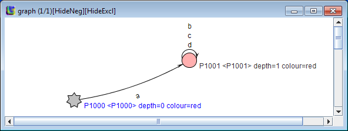

Introduction
Statechum is the tool that can be used for the inference of models and their comparison as well as for test generation.
The inference process can use both passive and active. For the passive one, Blue Fringe can be used; active learner uses QSM.
After the brief introduction, this document contains three parts, installation of Statechum,
sample Statechum use and how to use Synapse. If you only intend to use Synapse, skip to the how to use Synapse part.
The tool is mostly written in Java, but a few components of it are implemented in C.
These are not needed for most tasks but could be useful for model comparison and where domain-specific properties
(written in linear temporal logic LTL or the language of Yices constraint solver) are used to help inference.
There is also integration with Erlang runtime (Statechum can be exposed as an Erlang node, as well as start Erlang nodes itself) and
the R tool in order to plot graphs.
The supported execution environment is Windows/Linux/MacOS (all x86_64). The tool may work on other platforms (such as 32-bit platforms) but the test suite for the tool is not routinely run on a 32-bit platform and a number of components may be missing or obsolete.
Installation
The first step is to clone the Git repository from here.
The next step depends on whether you plan to install it as an end-user (simply uncompress the binary which is
fast but does not run built-in tests) or developer (involves building if necessary and possibly running all tests).
Building the Java part of the tool - end-user install
First, clone the Git repository from https://github.com/kirilluk/statechum and then uncompress the specific binary into the root directory of it. These
are provided for specific versions of Statechum, such as the one from Oct 7, 2015
(git commit ending at bbec4, Oracle Java 1.8.0_60, Erlang R16).
The .zip contains bin and tmp directories and is intended to be uncompressed into the root of the Statechum folder.
The bin part contains Java .class files and tmp contains the `beam' folder with Erlang .beam files. The choice of Java 8/Erlang R16 broadly means it will work with any modern release of Java or Erlang.
Specific components of Statechum have separate installation instructions, described below.
None of them are really needed for Synapse although installing linear may be useful since it can speed-up the computations of differences
between graphs.
Building the Java part of the tool - developer install
The first step is to clone the Git repository from here.
The whole directory is a valid Eclipse project and can be directly imported into Eclipse as a project. For developers,
it might be useful to set the same warning options in Eclipse as those used during development of Statechum.
These are documented in the file src/statechum/analysis/learning/Visualiser.java, search for 'Warning settings for Eclipse'.
The first line, 'WWI (non-static access)' means that of the three options starting from the one called 'non-static access',
the first two should be set to Warn and the last one to Ignore.
An Ant build file is provided, where the target 'compileTests' will build the whole Java part of Statechum including its tests.
Running tests
Tests can be launched either via Eclipse as a Java unit test (class statechum.AllTests) or via Ant using the `test' target. If everything is fine, the tests will all pass on both Windows x86_64 and on Linux x86_64. The requirements to pass tests are much higher than those to run the tool: on one hand, all the optional components such as the R tool and Erlang should be available and the system running the tests should have at least 20GB for memory for the tests handling large automata.
The run time for all tests is 19 hours on an i7-Ivy Bridge at 3.7 Ghz, however the most important tests (anything not part of `LengthyTets') completes in 13 min on the same PC.
Directories in the Statechum folder and special installation instructions for non-Java components of Statechum
| Directory | Description | where used | Special installation instructions |
| src | the source code of the Statechum tool. | all components of Statechum use it | none |
| lib | Various external libraries used by the tool.
These are the components of the R tool as well as JUnit, Jung, Weka and a few others. |
- Components of R are used to automatically plot graphs, without having to invoke R separately.
In addition, they are included in order to make sure the whole of Statechum builds from within Eclipse without a working installation
of R but they also work with existing installations of R, even if R is newer.
-
ltl2ba is a tool that converts LTL formulae into Buchi automata. It is used where domain-specific properties are expressed using LTL.
- Modified typer is used where type information of Erlang functions is used in order to generate traces during active inference process.
It is different from typer included with Erlang OTP in that type information is generated in a form that can be easily imported;
in contrast, typer included with OTP generates human-readable type information with various abbreviations (such as ellipsis) that are ambiguous.
- Jung is a graph visualisation and manipulation library, used to visualise graphs.
|
For convenience, most components are packaged together with the tool.
- R needs to be installed separately and has to include RJava, JavaGD and aplpack. Details are at the top of the file
src/statechum/analysis/learning/DrawGraphs.java
-
ltl2ba needs to be compiled.
Most of the time, it is enough to type 'make' in the lib/lbl2ba-1.1 directory, with the exception of Windows where Cygwin can be used to build it by invoking make -f Makefile.win64. Mingw will probably also work.
|
| linear | The C code permitting umfpack to be called from Statechum. | Comparison of models. If the C part is not available, the comparison will still work but it will fall back onto Java implementation that is very slow and limited to tiny machines. |
The details how to build this are in the comment at the top of the file src/statechum/analysis/learning/rpnicore/LSolver.java and
require installation of umfpack. To simplify matters, pre-compiled versions of the library fit for use with Statechum can be found
here, grouped by an operating system. These tend to contain
libraries that should go to linear/.libs directory as well as smt/.libs,
the latter responsible for the integration with the Yices solver. |
| smt | The code to utilise Yices from within Statechum. | Domain-specific constraints in the language of Yices-1 | Install a shared-library version of Yices from its official distribution page at SRI. The process to build the library is described at the top of the file
src/statechum/analysis/learning/Smt.java. As an alternative, the library distributed here will provide the integration (but yices-1 still needs to be installed).
|
| ErlangExamples | A few examples of Erlang code, used in experiments. | Erlang integration | Erlang integration requires Erlang OTP to be installed, versions 15-18 are supported and version 14 may work (it used to be supported in the past). Erlang distributions that come packaged with operating systems such as Debian are not supported but are likely to work. |
| ErlangOracle | Active learner from Erlang modules, uses type information obtained from Erlang typer to generate random traces run a module of interest through them and based on the traces that the module was happy with, infer a model of it. | Erlang integration | Same as for any Erlang integration |
| htdocs | Statechum documentation on Sourceforge | | |
| resources | Demo traces and graphs used for demonstration, research experiments and for testing of statechum. | Various parts of statechum | none needed |
Running Statechum
Depending on the components that are used, specific Java command-line arguments may be needed, such as to set the path where JVM will be looking for libraries to load and environment variables (the R tool needs R_HOME to be set). Examples of such options are provided at the top of the src/statechum/analysis/learning/Visualiser.java file. As a bare minimum, '-ea -DVIZ_DIR=resources/graphLayout' are needed.
If running Java from a command line rather than Eclipse, you can use
java -cp bin;lib/modified_collections;lib/commons-collections-3.1.jar;lib/OtpErlang.jar;lib/colt.jar;lib/javaGD.jar;lib/JRI.jar;lib/jung-1.7.6.jar;lib/polyglotclasses-1.3.4.jar;lib/sootclasses.jar;lib/weka.jar -ea -DVIZ_DIR=resources/graphLayout statechum.apps.QSMTool resources/qsmtooldemo.txt
Here statechum.apps.QSMTool is the component of Statechum to run and resources/qsmtooldemo.txt is the input file, with the format described below. The semicolon separting different components of a Java classpath is a semicolon for Windows and a colon for Unix operating systems.
The outcome of running the above Java command is shown below.

The star denotes the initial state; it is coloured grey because it is currently selected (and hence the label of this state P1000 is in blue).
Learning from event sequences
A simple approach to learning - pass a list of traces to QSMTool
The Java class statechum/apps/QSMTool can be used to start the tool and learn from traces. It is useful when only basic customisation is needed.
The input format for traces can be illustrated with the following example which is available as resources/qsmtooldemo.txt
and run with the java call shown above.
passive
+ [ [ a,b,c ], [ a,b,d] ] - [ [ a,a ],[ a,b,e ] ]
config visualiseOutput true
On the first line, 'passive' means that the inference process will only rely on the provided information; without it, Statechum will pop queries when it learns so as to confirm its decisions. Traces are given on the second line above, '+' means that what follows is a collection of positive traces. If the first character is '-', what follows are negative traces. Positive means all traces in a collection are valid sequences; a negative trace is the one that is not permitted, but any strict prefix of it is a valid trace. For example, a negative trace [a,a], means that it is possible to attempt 'a' but only once. All traces are assumed to start at the initial state. A negative trace [ a,b,e ] means that [ a,b ] is permitted, but from the state entered after [a,b], it is not possible to do an 'e'.
There could be any number of lines with traces in an input file.
Some of the traces of the CVS protocol can be found in file resources/CVS.txt
Cutomisation of the learner usually requires an in-depth knowledge of the implementation. All the options are described in src/statechum/Configuration.java file and can be set by adding lines such as
config generalisationThreshold 2
This specific option means that pairs with a score of 2 and above should be merged without any questions and is only useful for active inference.
In the above example, visualiseOutput option means that the learnt automaton should be displayed. Statechum may also be asked to record it as a .txt or a .dot file (for Graphviz).
If requested, an inferred automaton is displayed in a window, using the Jung toolkit with a few changes. The most important of them is that although the layout is automatic in Jung, it does not always produce pretty graphs and will invariably generate horrible ones if a graph contains a significant number of states. It is therefore possible to 'save' the layout but pressing F2 or right-clicking and choosing saveLayout. When a graph with the same name is loaded again (name shown at the top of the graph window), it will not use Jung layout but instead load the saved one. F3 loads a previously-saved layout (useful when edits to it have messed it up) and F4 permits saving the position and size of all currently active Statechum windows. F2 and F4 used together permit one to re-run an earlier experiment and get the window to pop in the right place with the expected layout of the graph; this is very useful to inspect changes if different learning options are selected. The file to save the position of windows is defined via the JVM option '-DVIZ_CONFIG=config_statechum' where config_statechum is the name of the file. Hitting the ESC key from a graph window terminates Statechum; F toggles display of negative states (which can be quite numerous hence a way to hide them).
Modifying the tool to load traces directly
This is illustrated by the src/statechum/analysis/learning/experiments/I2cexperiment.java. If run via
java -cp ... -ea -Xmx15000m -DVIZ_DIR=resources/graphLayout statechum.analysis.learning.experiments.I2cexperiment
where ellipsis represents the classpath.
it will load a single long trace (originally obtained by logging commands both sent and received by a simple device via i2c bus), and learn a model.
The outcome is displayed in a window. Running such an experiment takes around 15min on a i7 Haswell at 4.4Ghz and requires a PC
with a lot of memory (giving Java 15GB via the -Xmx15000m is enough but 10GB is not).
The first output is the length of the trace, followed by the odd-looking alphabet.
The learnt graph is stored in a file called outcome_i2c.xml in the GraphML format, which can subsequently
be visualised by running statechum.apps.GraphMLVisualiser with the name of Graphml file as a parameter:
java -cp ... -ea -DVIZ_DIR=resources/graphLayout statechum.apps.GraphMLVisualiser outcome_i2c.xml
A copy of the outcome of learning can be found in resources/i2c_study/outcome_i2c_chunk7.xml and loading it
produces a picture that can look as follows:
Learning using Synapse
Installation
- First, install Statechum. The easiest way is to follow the instructions in the end user installation
part of this document.
-
Synapse is a project that has to be cloned from GitHub here.
After cloning, two files need to be edited in the main Synapse directory, synapse.conf containing an absolute path to the
Statechum configuration file, and the statechum configuration file statechum.conf itself.
The defaults in statechum.conf need to be edited to include absolute paths to the Java binary
(such as 'C:/Program Files/Java/jdk1.7.0_07/bin/java.exe' on Windows) and an absolute path to Statechum.
-
If you installed Statechum by uncompressing the binary, you can skip this step.
If you chose to build Statechum from source, you will need to
build and run Erlang tests (unless you have run tests as described in the developer install guide).
In order to build and run Erlang tests, you need to enter the Statechum directory and run ant erlang-test
which will both compile the Java & Erlang portion of Statechum and check that it works correctly.
Compiled .beam files can then be found in the tmp/beam ... directory, where the ellipsis corresponds to an Erlang release and platform being used.
This directory needs to be renamed to be called just tmp/beam. Note that Erlang tests may fail due to timeouts, in which case you may re-run them
to see if things improve. They may also fail if run with an JDK1.6 due to interaction of different tests, in which case re-running individual tests can
be used to confirm whether it is the interaction that is at fault; this problem does not occur with Java 8 on either Windows or Linux.
-
Compiling Synapse can be done on Linux or MacOS by running 'make' in the main Synapse directory (make test can also run tests); on Windows, cygwin is needed and
running './rebar compile' builds Synapse. An alternative is to enter the ebin directory of Synapse and type
erlc -I../include ../src/synapse.erl ../src/synapse_sm.erl ../src/synapse_stamina.erl ../src/synapse_statechum.erl
Learning from traces
Running Synapse from Erlang command line requires entering the main Synapse directory and typing
erl -pa ebin -name synapse
Here, 'synapse' is Erlang node name that can be arbitrary.
Calling
Learnt=synapse:passive_learn([{neg,[a,b]},{pos,[a,a,a,b]}],[]). from Erlang command line will cause Synapse to run Statechum and learn an FSM from the provided traces. The format of inputs is a list of elements {pos,TRACE} or {neg,TRACE} where the former corresponds to a positive trace and the latter - to the negative one (a negative trace is the one where the last element is not permitted but all strict prefixes are valid traces). This produces a few progress messages and a final machine
{statemachine,['P1000','P1001','P1002','N1000','P1004'],
[{'P1000',a,'P1001'},
{'P1001',a,'P1002'},
{'P1001',b,'N1000'},
{'P1002',a,'P1002'},
{'P1002',b,'P1004'}],
'P1000',
[a,b]}
The machine is an Erlang record, where the first component is a list of states, second one a list of transitions (in the format from-label-to), followed by the initial state and an alphabet.
Such machines can be visualised by calling
synapse:visualise(Learnt,[],learnt).
which pops a graph similar to running Statechum via QSMTool. The last component of the call to visualise is the file name, used to store layout.
Unlike a conventional Statechum window, the one created by calling synapse:visualise function does not respond to the ESC key since it is otherwise far to easy to terminate Statechum.
Computation of a diff between machines
Calling
Orig={statemachine,['P1000','P1001','P1002'],[{'P1000',a,'P1001'},{'P1001',a,'P1002'},{'P1001',a,'P1001'}],'P1000',[a,b]},
D=synapse:diff(Orig,Learnt,[]).
permits one to compute a 'diff' between the two FSMs, listing transitions that need to be added or removed from the first one to turn it into the second one. The intention here is not to rely on state names and compute the smallest number of additions/deletions to turn one into another one.
In this example, Orig is Learnt with a few modifications. Running synapse:diff
produces a rather concise
{statemachinedifference,[{'P1001',b,'N1000'},
{'P1002',a,'P1002'},
{'P1002',b,'P1004'}],
[{'P1001',a,'P1001'}],
['N1000','P1004'],
[],[],'P1000'}
It is now probably best to visualise the Orig graph via
synapse:visualise(Orig,[],orig).
and then depict the computed difference by calling
synapse:visualise_diff(Orig,D,[],diff).
where Orig and D are the two variables assigned above.
Above, the leftmost is Orig, middle graph is Learnt and the one on the right depicts the differences. Black transitions are those that match, red are those to be removed from Orig
and green ones are those to be added to it, in order to turn Orig into Learnt.
If you have followed the sequence of commands starting from synapse:visualise until now, you will see that the difference
has replaced the earlier graph in the window, but it now contains '3/3' in the title.
This is a reflection that there are three graphs and you are looking at the third one. Using the arrow keys up/down you can switch between graphs. If a layout of any of them has been saved, it is used; otherwise, layout is recomputed so the graphs may look slightly different when you repeatedly switch between them.
Active inference from Erlang modules
Synapse also supports active learning from Erlang modules. For example, there is a module ErlangExamples/locker/locker.erl in the Statechum directory. You can then call
L=synapse:learn_erlang('d:/experiment/github/statechum/ErlangExamples/locker/locker.erl'). where 'd:/experiment/github/statechum/ErlangExamples/locker/locker.erl' is an Erlang an atom reflecting an absolute path to the Erlang module to learn. When you call it, Statechum is launched in order to inspect types of the functions in the module, generate some random traces and then learn an automaton, where queries by the learner are automatically validated by running them on the module being learnt. The automaton learnt is assigned to variable L and can be visualised with
synapse:visualise(L,[],locker).
The outcome of visualisation is the following: